參考資訊：
http://dangerousprototypes.com/docs/CoolRunner-II_CPLD_breakout_board
http://dangerousprototypes.com/docs/CPLD:_Complex_programmable_logic_devices#Programming
main.v
module main (
input clk,
output reg led
);
reg [23:0] cnt;
always @(posedge clk) begin
if (cnt == 5000000) begin
cnt = 0;
led <= ~led;
end else
cnt = cnt + 1;
end
endmodule
main.ucf
NET "clk" LOC = "P1" | BUFG = CLK; NET "led" LOC = "P39";
開啟Xilinx ISE
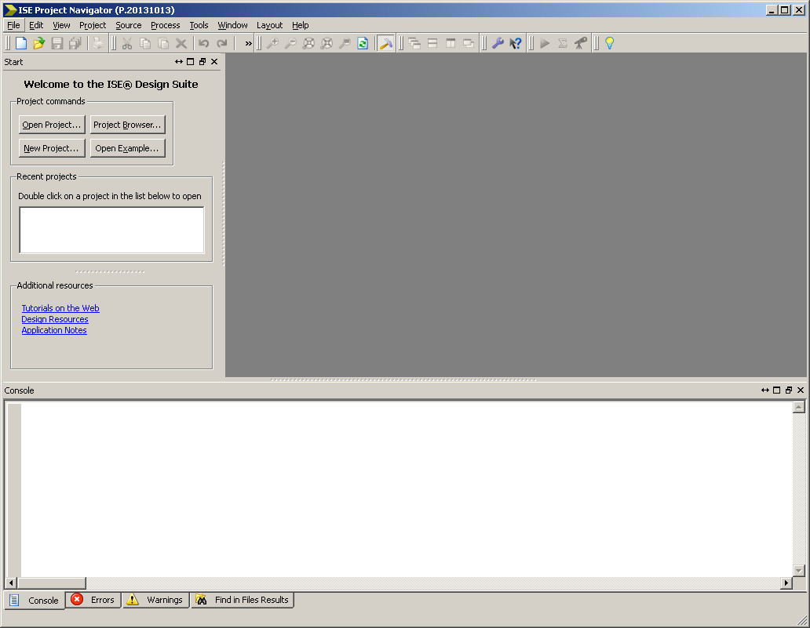
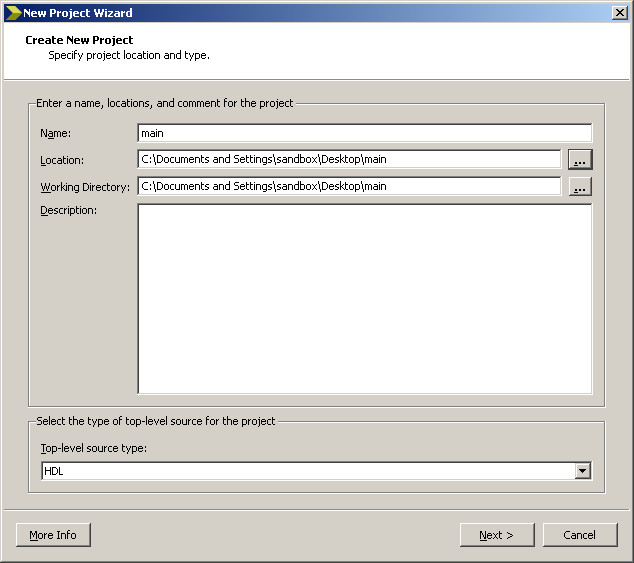
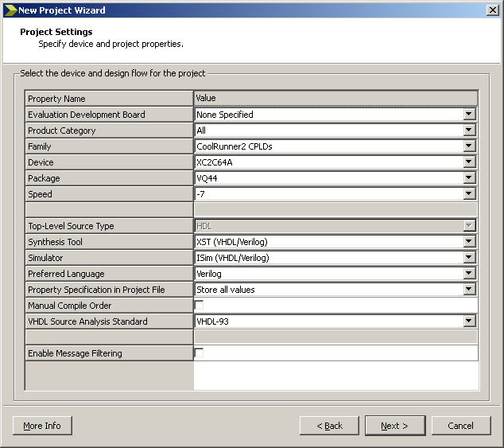
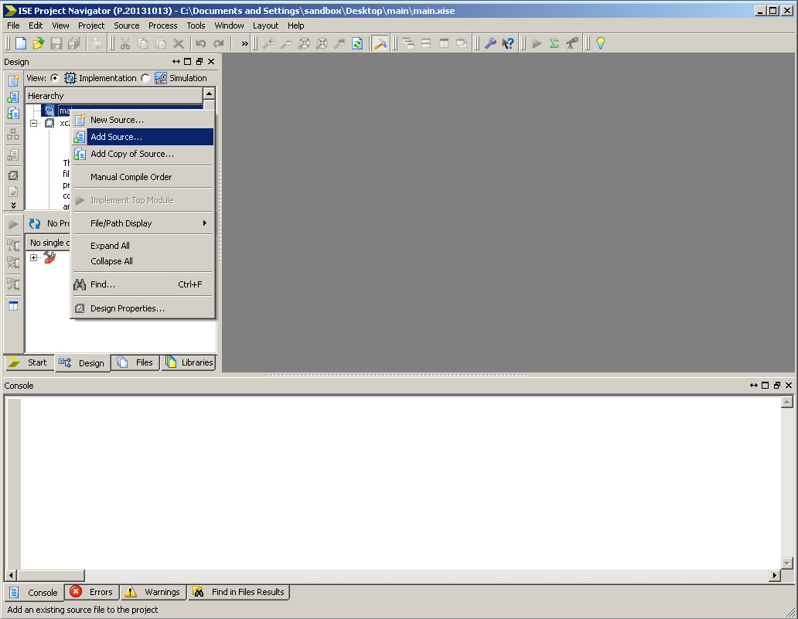
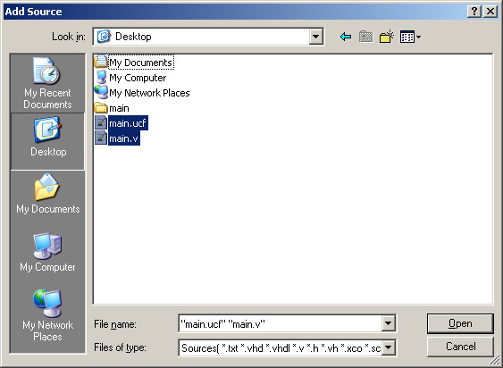
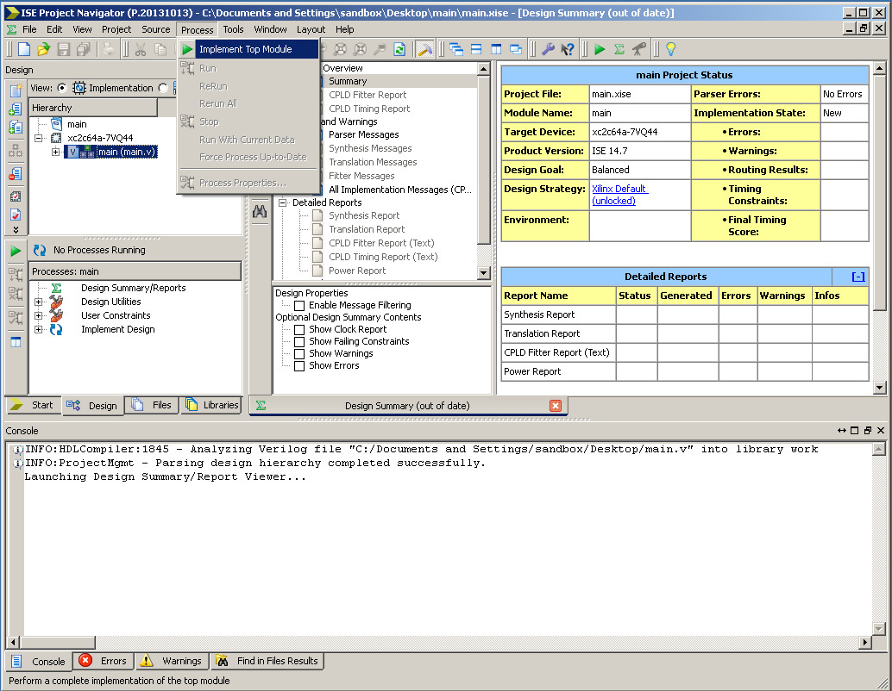
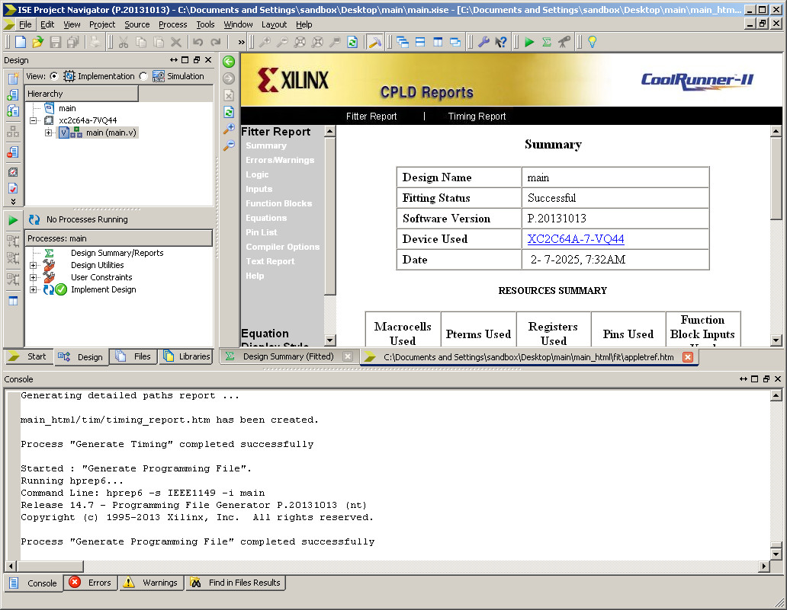
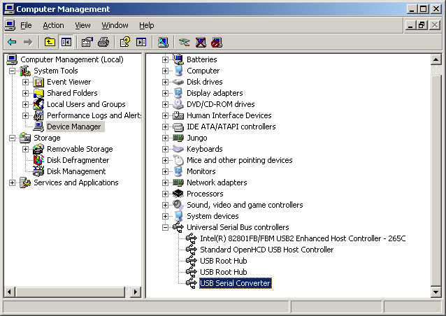
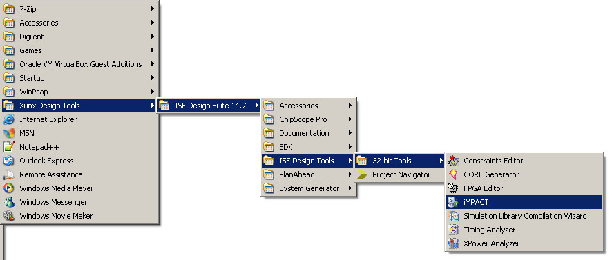
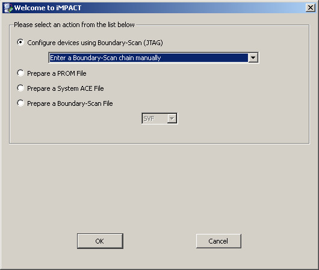
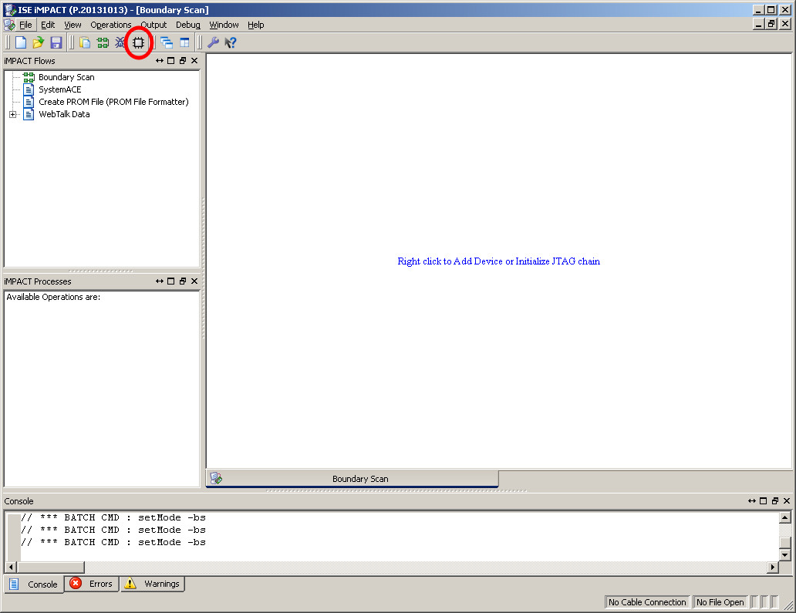
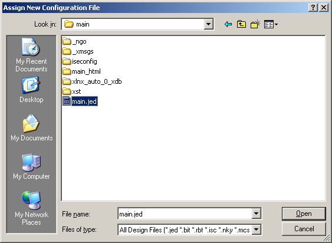
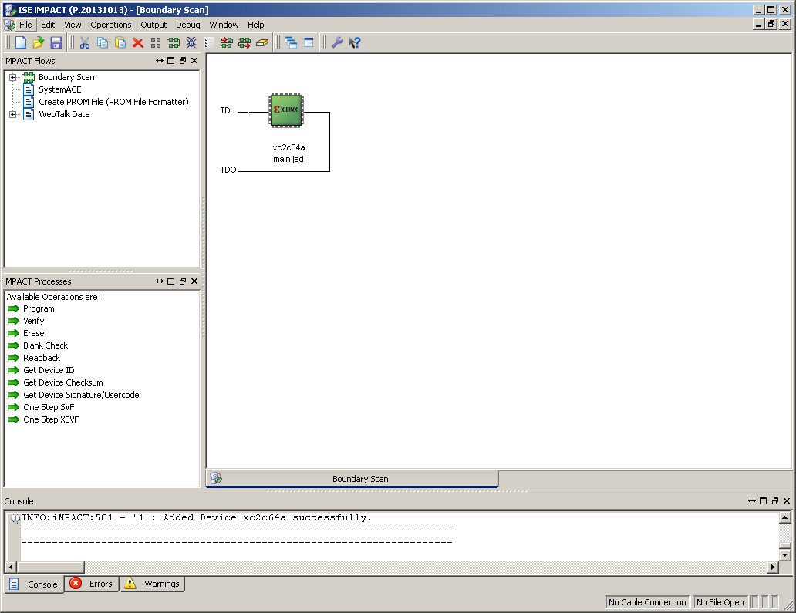
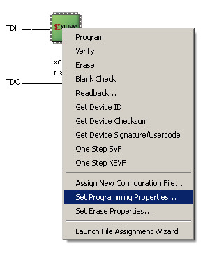
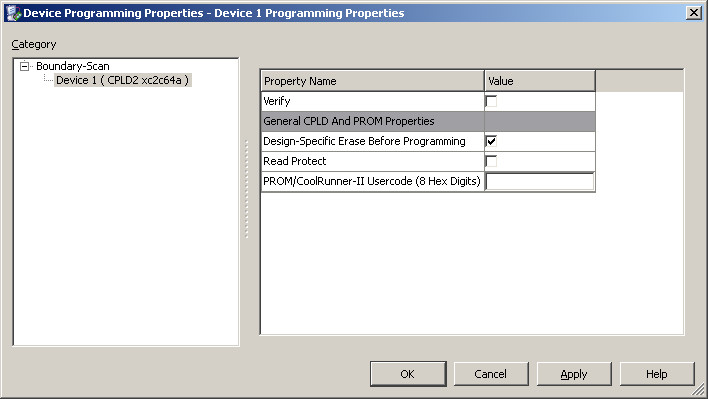
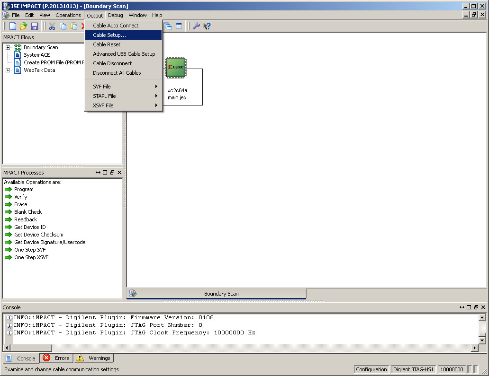
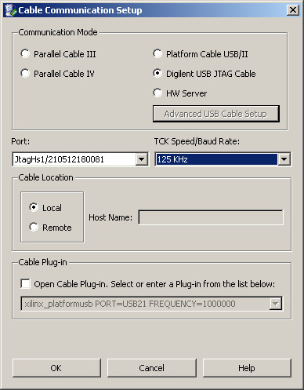
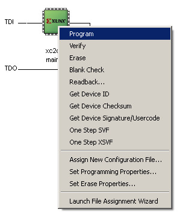
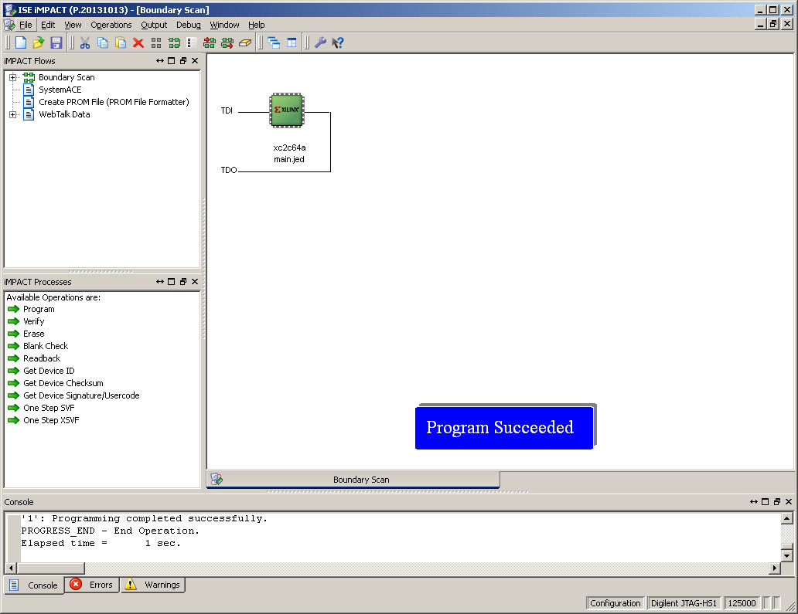
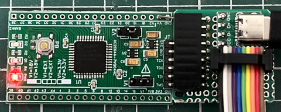
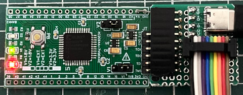